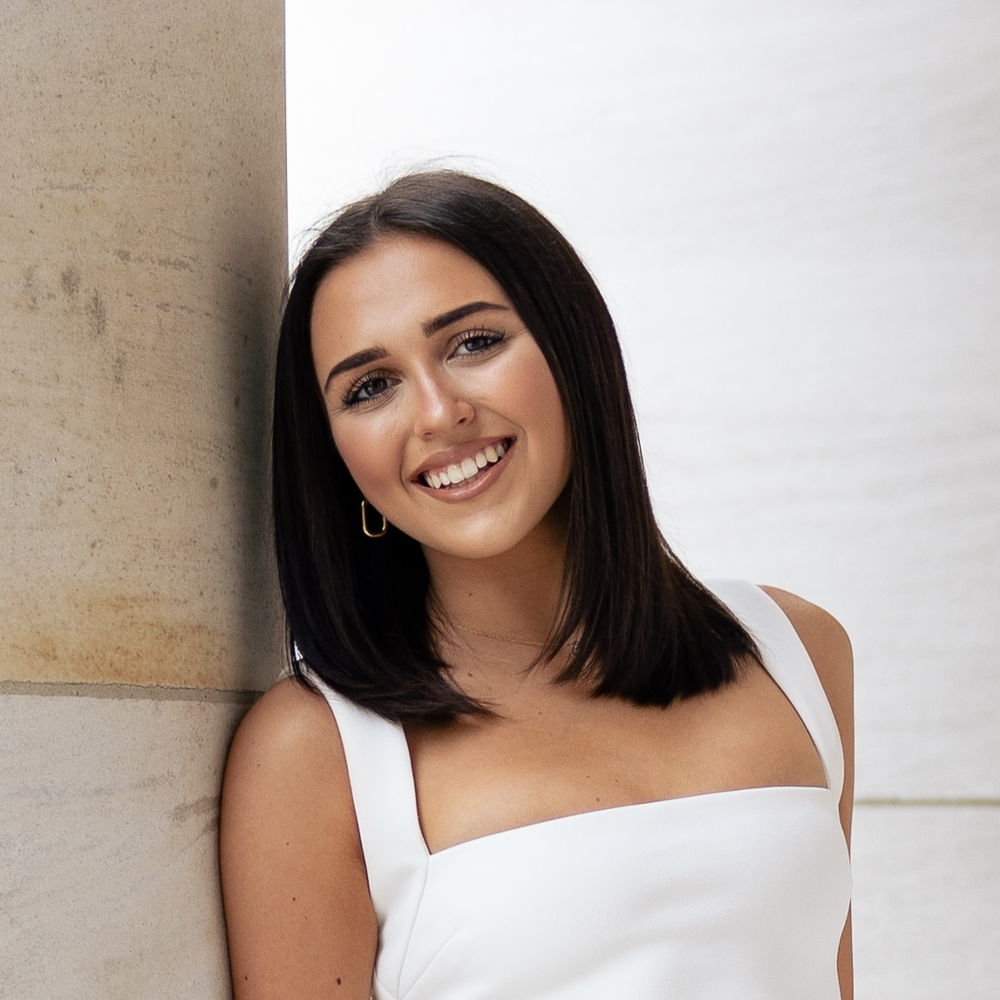

PhD Student in Economics
Katelynn Lewallen
Welcome to my personal website! I am a 2nd year PhD Student at UW Madison with interests broadly in empirical microeconomics, specializing in education.

About Me
My name is Katelynn Lewallen and I am originally from Scottsdale, AZ. I received my undergraduate education at Vanderbilt University in Nashville, TN and am currently located in Madison, WI - many places to call home! I am a second year PhD student in the Economics program at UW Madison with interests broadly in empirical microeconomics. Specifically, I am interested in public economics with a focus on higher education.